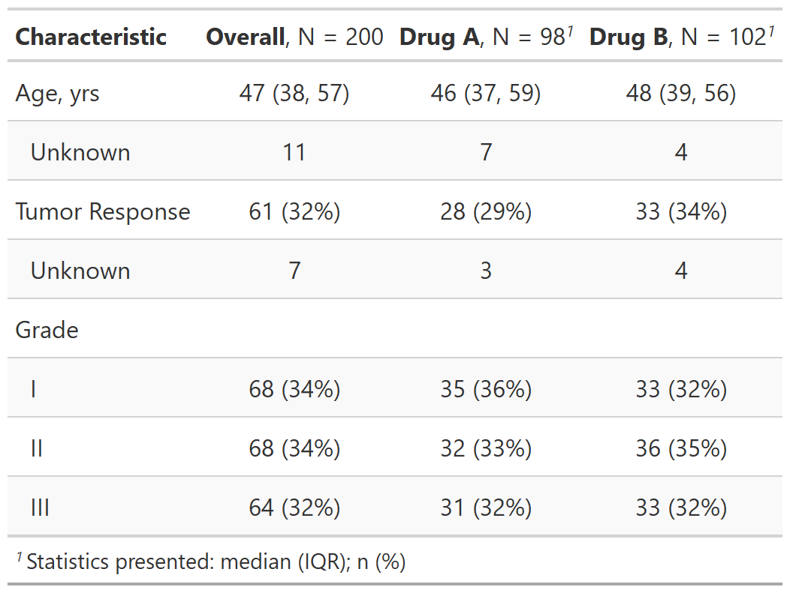

| add_overall {gtsummary} | R Documentation |
Adds a column with overall summary statistics to tables
created by tbl_summary.
add_overall(x, last = FALSE)
x |
Object with class |
last |
Logical indicator to display overall column last in table.
Default is |
A tbl_summary object

Daniel D. Sjoberg
Other tbl_summary tools:
add_n(),
add_p(),
add_q.tbl_summary(),
add_stat_label(),
bold_italicize_labels_levels,
bold_p.tbl_summary(),
inline_text.tbl_summary(),
modify_header(),
sort_p.tbl_summary(),
tbl_merge(),
tbl_stack(),
tbl_summary()
tbl_overall_ex <-
trial[c("age", "response", "grade", "trt")] %>%
tbl_summary(by = trt) %>%
add_overall()